Deployment Overview
This document describes how to integrate OneSpan Authentication Server with a WatchGuard Firebox. You can use the combination of these two products to set up a more secure remote connection between the outside world and your company’s internal network.
OneSpan Authentication Server supports integration into an existing environment with a RADIUS Server, Active Directory Server or LDAP Server. In this document, we use a RADIUS Server as an example. To demonstrate user authentication in this document, we use the WatchGuard Mobile VPN with SSL client.
In this document, we describe how to configure the OneSpan Authentication Server and Firebox to work together.
Integration Summary
The hardware and software used to complete the steps outlined in this document include:
- Firebox installed with Fireware version 12.7
- OneSpan Authentication Server version 3.21.0.5607
Test Topology
OneSpan Authentication Server Configuration
To start, we must configure the settings in OneSpan Authentication Server.
Configure Users and Policies
Log in to the OneSpan Authentication Server.
- Select Users > Create.
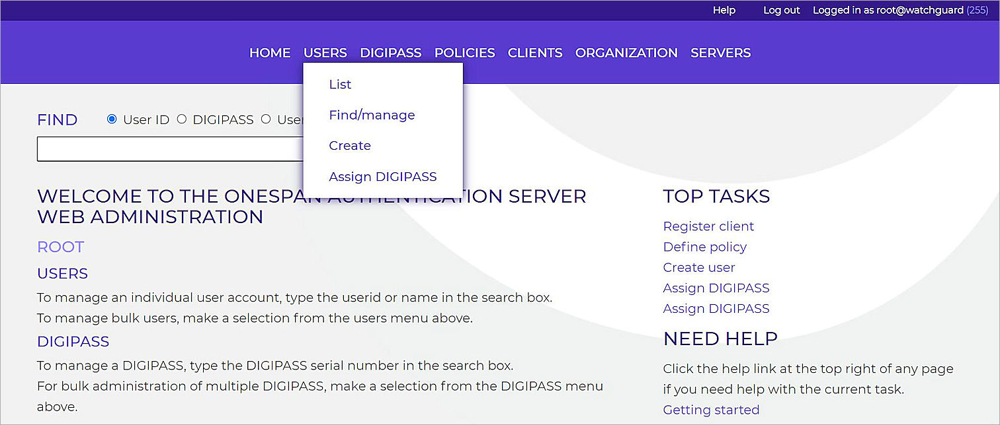
- In the User ID text box, type the user name.
- In the Enter static password and Confirm static password text boxes, type the static password for this user account.
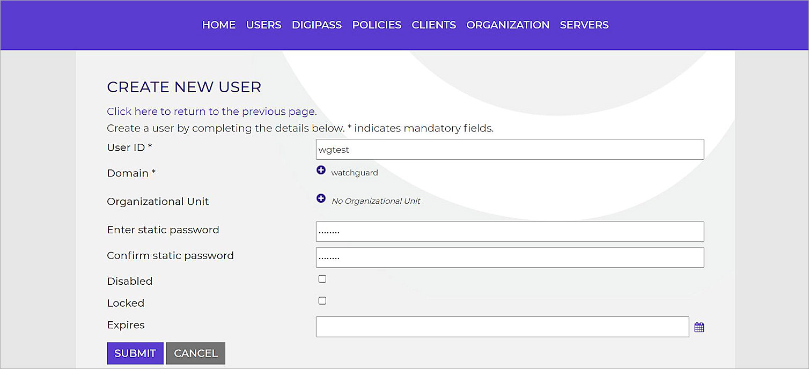
- Click Submit.
- Select Policies > Create.

- In the Policy ID text box, type a name for the policy.
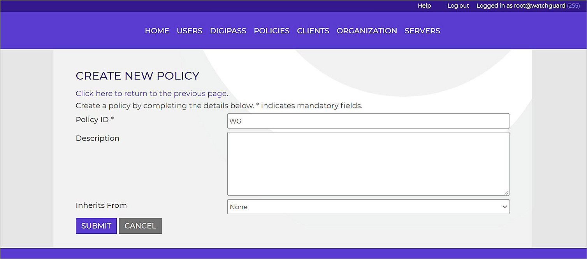
- Click Submit.
- Select Policies > List.
- Select the policy you created.
- From the Policy tab, click Edit.
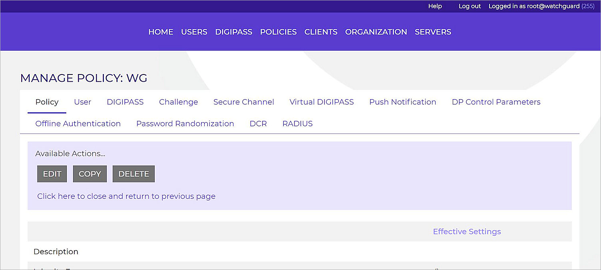
- From the Local Authentication drop-down list, select the suitable authentication method. In our example, we select DIGIPPASS/Password during Grace Period.
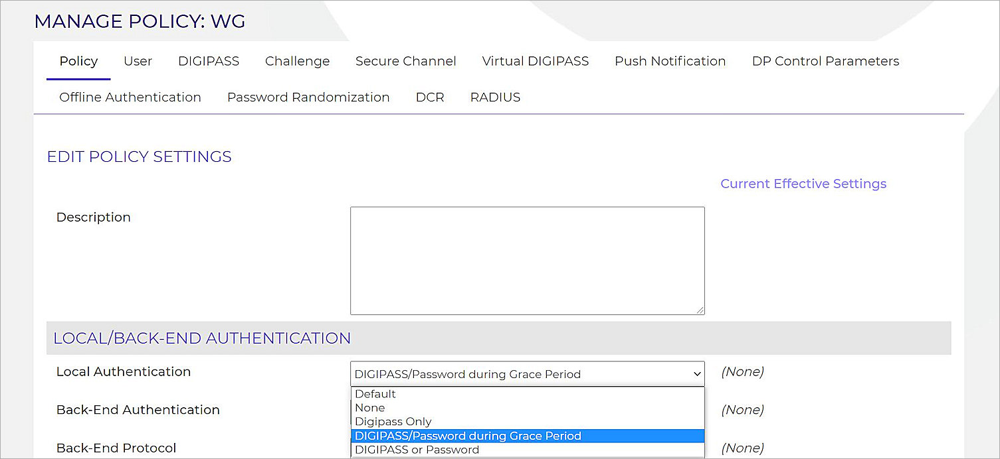
- Select User tab.
- Click Edit.
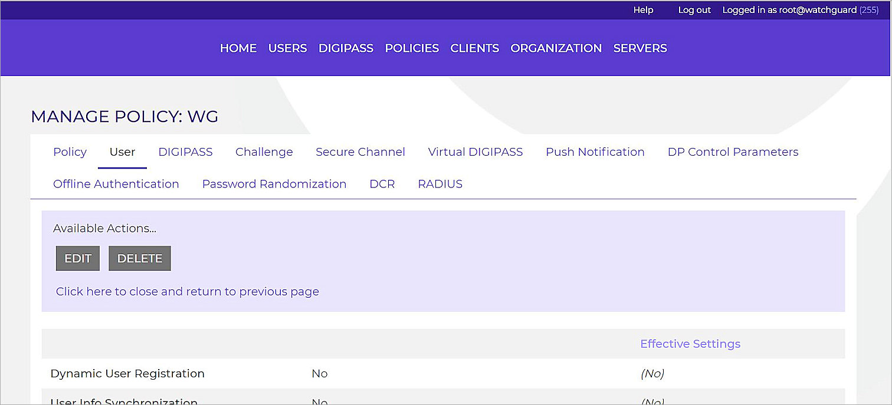
- If you have a domain, in the Account Constraints section, in the Default Domain text box type your domain.
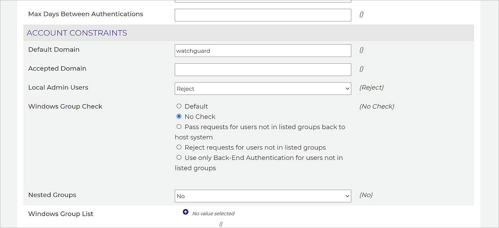
- Click Save.
- Select RADIUS tab.
- Click Edit.
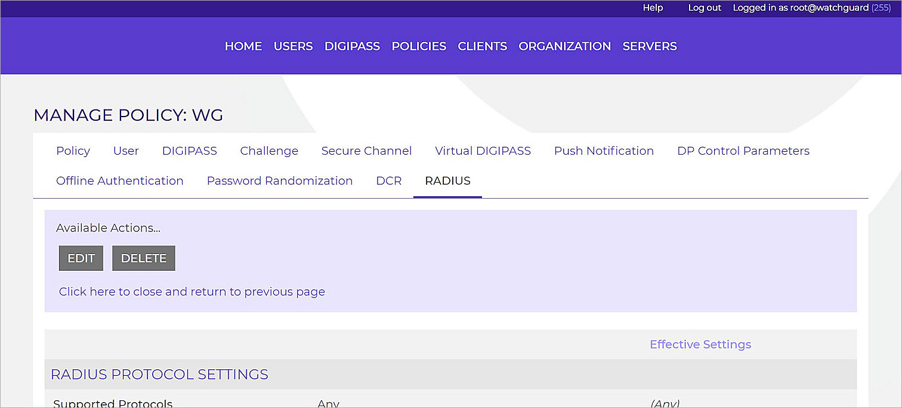
- In the RADIUS Protocol Settings section, from the Supported Protocols drop-down list, select Any.
- Click Save.
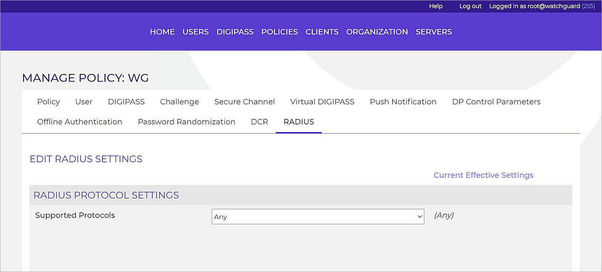
Add the Firebox as a Client
In the Clients configuration, you specify the location from which OneSpan will accept requests and the protocol it uses. To do this, you must add the Firebox as a RADIUS client.
- Select Clients > Register.
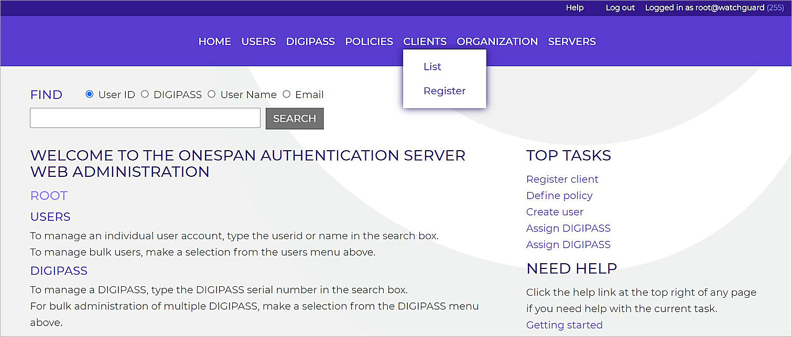
- From the Client Type drop-down list, select RADIUS Client.
- In the Location text box, type the Firebox interface IP address. This interface will receive the RADIUS request. This is usually the Trusted or Optional interface.
- From the Policy ID drop-down list, select the policy that you created in the previous section.
- In the Shared Secret and Confirm Shared Secret text boxes, type the shared secret.
This shared secret must match the shared secret you configure in the RADIUS server settings on the Firebox. - If necessary, in the Character Encoding text box, type the encoding used. If you do not use encoding, leave this field empty.
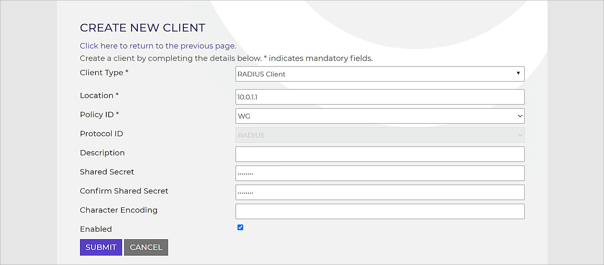
- Click Submit.
Assign a DIGIPASS to Users
OneSpan enables users to log in with a One-Time Password (OTP). The DIGIPASS is a device that generates OTPs for the user.
To enable a user to use an OTP as part of the password, you must assign a DIGIPASS to the user.
- Select DIGIPASS > List.
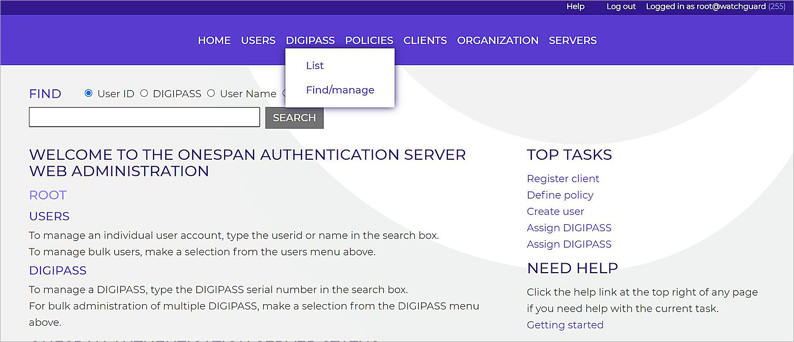
- Click Assign.
- Follow the wizard to finish the assignment.
If a user does not have a DIGIPASS assigned to them, they can use the static password to authenticate and log in. If a DIGIPASS is assigned to the user, the user can assign a DIGIPASS token password to DIGIPASS token, then use the DIGIPASS token password and the OTP(shown on the DIGIPASS token) to authenticate and log in. See the OneSpan documentation for more details.
Firebox Configuration
This configuration procedure uses Fireware Web UI. You can also use Policy Manager to complete these steps.
Configure the RADIUS Server on your Firebox
To authenticate with OneSpan Authentication Server, you must enable the RADIUS server and configure the settings on the Firebox.
- Log in to Fireware Web UI at https://<IP address of Firebox>:8080.
- Select Authentication > Servers > RADIUS.
- Click Add.
- In the IP Address text box, type the IP address of the OneSpan Authentication Server.
- In the Port text box, type the port used in OneSpan Authentication Server for RADIUS authentication. The default port is 1812.
- In the Passphrase and Confirm text boxes, type the shared secret you configured for the RADIUS client on the OneSpan Authentication Server.
- In the Timeout text box, type 30.
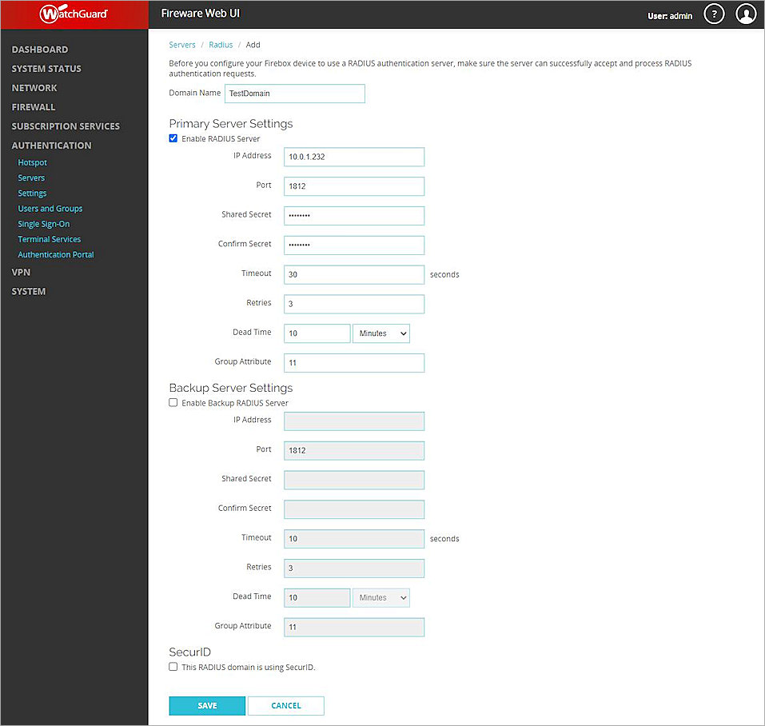
- Click Save.
Add Users
On the Firebox, add a new user to log in to the RADIUS server.
- Select Authentication > Users and Groups.
- Click Add.
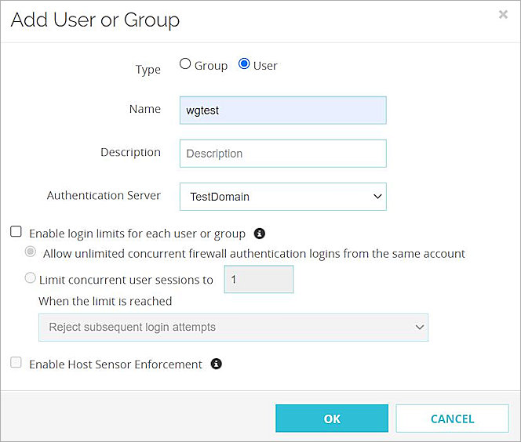
- For Type, select User.
- In the Name text box, type the same user name you created on the OneSpan Authentication Server.
- From the Authentication Server drop-down list, select the RADIUS server you created in the previous section.
- Click OK.
The user is added to the Users and Groups list on the Firebox.
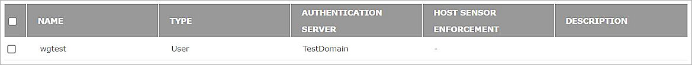
- Click Save.
Configure RADIUS Authentication for Mobile VPN with SSL
To use RADIUS authentication for user connections with the Mobile VPN with SSL client, enable Mobile VPN with SSL and configure it to use RADIUS for authentication.
- Select VPN > Mobile VPN > SSL.
- In the SSL section, click Manually Configure.
- Select the Activate Mobile VPN with SSL check box.
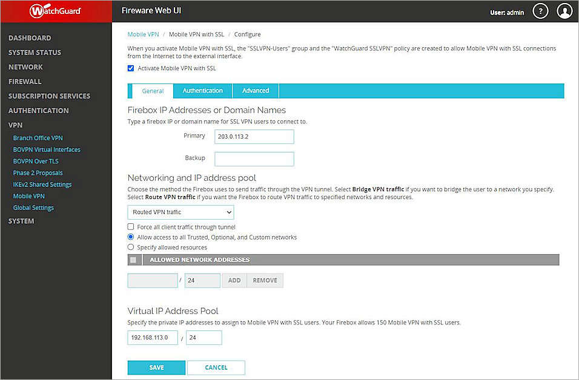
- In the Primary text box, type the public IP address (external IP address) or domain name of the Firebox. This is the IP address or domain name that Mobile VPN with SSL clients connect to.
- Select the Authentication tab.
- Under Authentication Server Settings, from the drop down list, select the RADIUS server you created in the previous section. Click Add.
- To set this as a the default authentication server, select the RADIUS server in the list and click Move Up.
- In the Users and Groups section, select the check box next to the name of the user you created in the previous section.
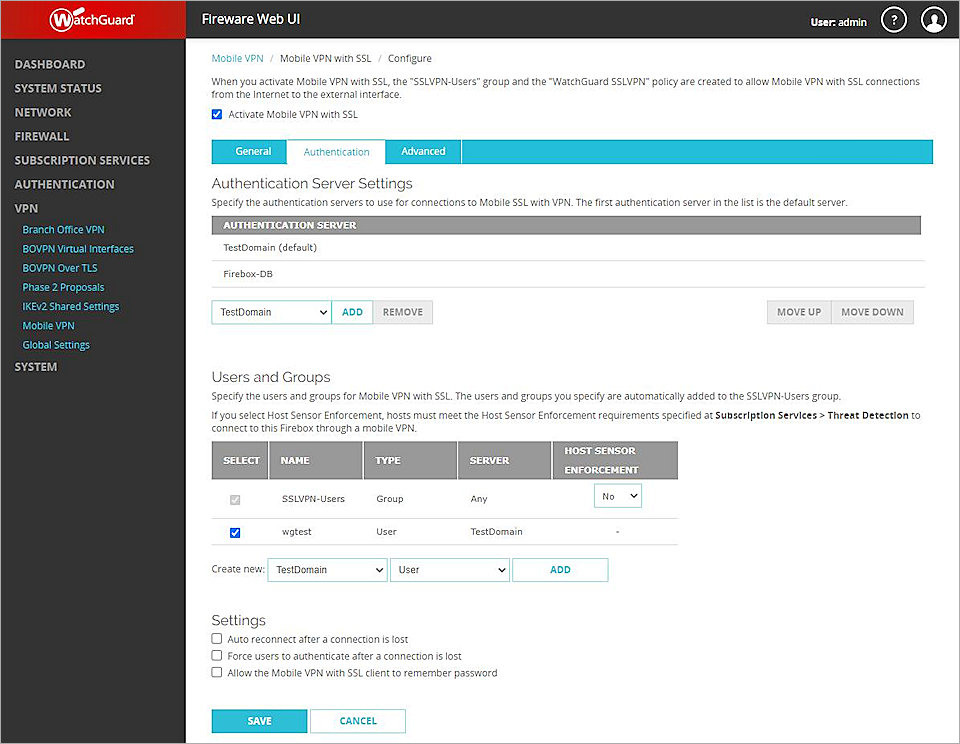
- Click Save.
Test the Integration
To test the integration, we use Mobile VPN with SSL to test user authentication.
Download the Mobile VPN with SSL Client Software
- Select VPN > Mobile VPN > SSL.
- Click Download Client.
- Download and install the VPN client for your operating system
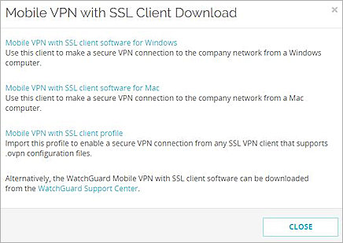
Mobile VPN with SSL Client Authentication
After the user downloads and installs the VPN client, they use the user name and password configured on the OneSpan Authentication Server to connect with the Mobile VPN with SSL client.
- Launch the Mobile VPN with SSL client.
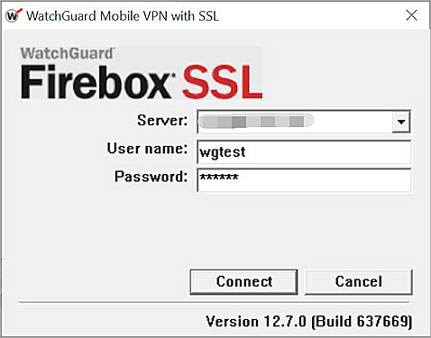
- In the Server text box, type the Firebox IP address that you configured in the Mobile VPN settings on the Firebox in the previous section.
- In the User name text box, type the user name configured on the OneSpan Authentication Server.
- In the Password text box, type the password. Remember to append the OTP shown on the screen of the DIGIPASS to the end of static password. Do not add a space between the static password and the OTP.
- Click Connect.
The Mobile VPN with SSL client shows the status Connected.